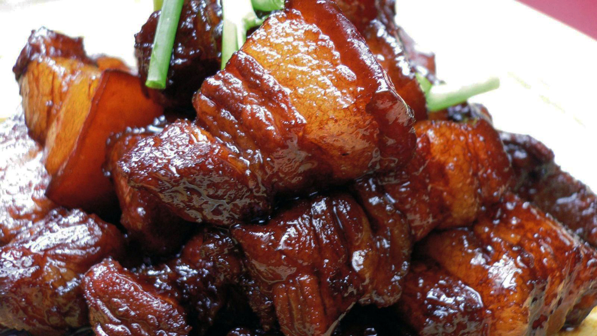
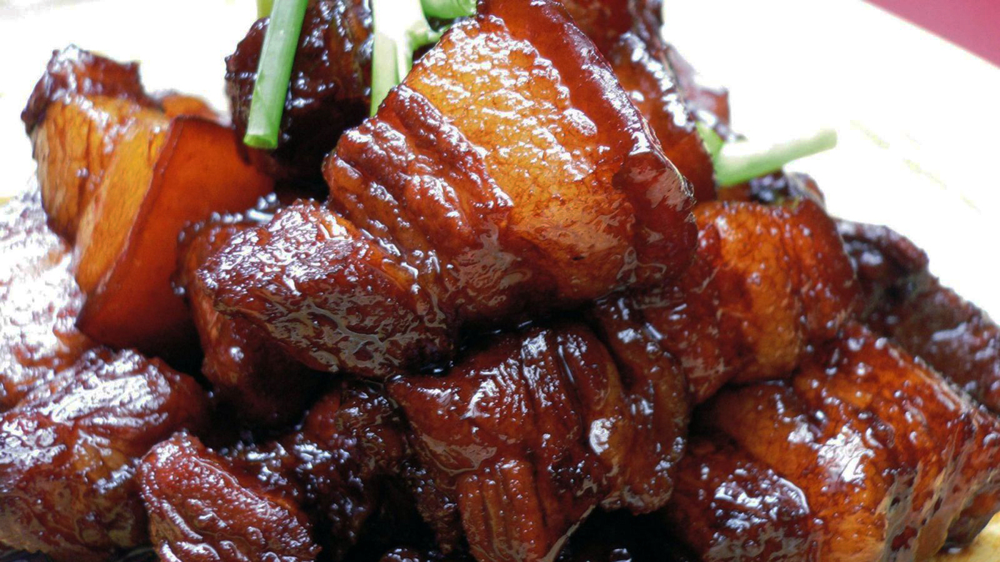

Chinese Braised Porkbelly
Ingredients
Serving Size: 4
Total time: 1.5 hours
- 2 large spring onions
- 2 star anise
- 1 knob of ginger
- 2 pieces of Cassia bark
- 1 teaspoon Sichuan pepper corns
- A small handful of dried hawthorns
- 3 lbs of Porkbelly (preferably with even, defined layers)
- 1/2 head of white onion
- 1/2 handful of Meigan cai (dried plum vegetables)
- 1/2 cup Cooking wine
- 1/3 cup Soy sauce for Shanghai braised dishes
- 1/4 cup Kimlan Lou Chou Soy Sauce
- 1/4 cup Kikkoman Soy Sauce
- 1/4 cup water
- 1/4 cup black cane sugar
Instructions
- Fill a large pot with water
- Cut porkbelly into medium-sized cubes
- Add porkbelly cubes into pot and heat until boiling to soak out blood
- In the meantime, slice onion, spring onions, and ginger
- Taking a second pot, line the bottom with onions, adding in the spring onions, ginger, star anise, dried hawthornes, Sichuan pepper corns, and Cassia bark
- Set the second pot on stove on simmer
- Soak Meigan cai in a small bowl of water
- Check on the porkbelly once it's boiling–if you see small hairs, take tweezers and pluck them out to the best of your ability
- Transfer porkbelly (no water) to the second pot, placing over the other ingredients.
- Pour cooking wine, Kimlan Lou Chou, Kikkoman over the porkbelly
- Pour water around the edges of the pot
- Add Meigan cai
- Cap the pot, keep on medium low heat for about 45 minutes
- Add black cane sugar and cook for another 30 minutes

 

Recipe Sites
Non-Recipe Sites